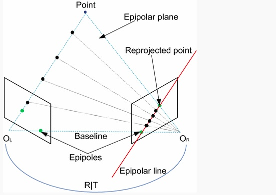
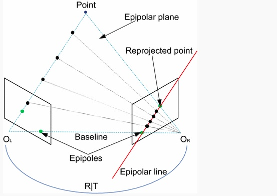

-----------------------------------------------------------
Biography
description
description
HoloMatic. Inc
Autonomous Drving Group, LeEco. Inc
Institute of Deep Learning (IDL), Baidu
description
Yelp Rating Prediction
Trained a prediction model using various machine learning methods
including Logistic Regression, SVM, Naive Bayes and Decision Tree
to predict the ratings of Yelp restaurant reviews given the review
text in a bag-of-words format.
Object Orientation Tracking
Implemented an Unscented Kalman Filter to track three dimensional
orientation based on the given IMU readings and generated a
real-time panoramic image from camera images by estimated
orientation.
Gesture Recognition
Used IMU readings from gyroscope and accelerometer mounted on a
mobile device to train a set of Hidden Markov Models to recognize
different arm motion gestures.
Lidar-based SLAM
Used lidar and wheel encoder data recorded by a mobile robot to
create a planar map of the path followed by the robot and
simultaneously localized the robot in that map.
Vision-based Pose and Velocity Estimation of Quadrotor
Estimated the pose and velocity of a quadrotor based on images
from camera and IMU readings by EKF, used estimated state as
feedback to control the quadrotor to follow a pre-defined path.
Multi-robots Map Merging
Merged local maps created by five independent mobile robots with
GraphSLAM algorithm, technique including front-end local map
feature detection and back-end pose graph optimization.
N. Bezzo, Y. Du, O. Sokolsky, and I. Lee,
A Markovian Approach for Attack Resilient Control of Mobile
Robotic Systems.
In Second International Workshop on Robotic Sensor Networks (RSN), Seattle, Washington, April 13, 2015.
N. Bezzo, J. Weimer, Y. Du, O. Sokolsky, S. H. Son, I. Lee,
A Stochastic Approach for Attack Resilient UAV Motion Planning.
In 2016 American Control Conference, Boston (MA), July 6-8, 2016
duyanwei0702@gmail.com